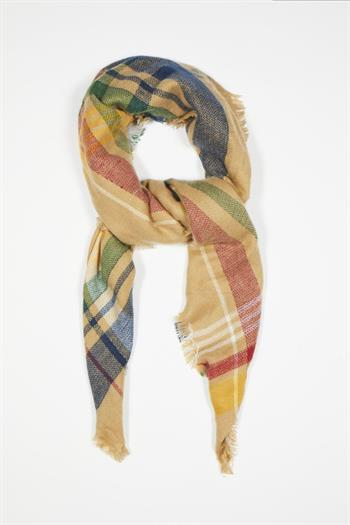
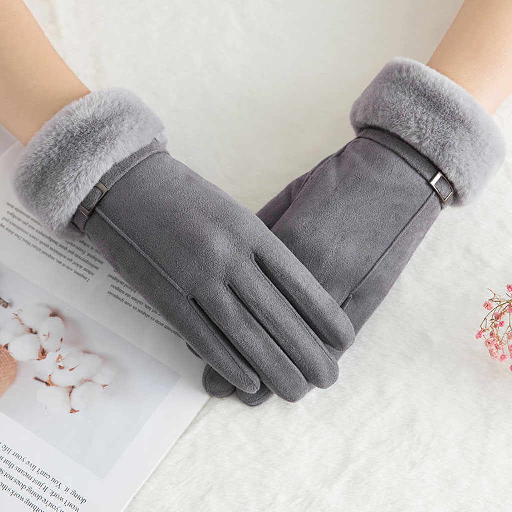
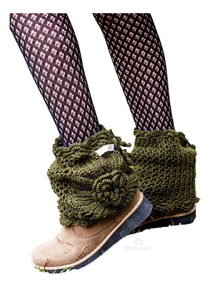
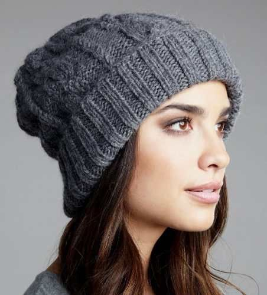

Pashminas
Pashminas como detalles de boda o comunión. Disponemos de muchos tipos de pashmina muy económicas y de diferentes calidades para todas las épocas del año. También disponemos de cajas , bolsas y cintas de raso personalizada para su presentación.

Guantes
Lo que necesitas para que no le falte ni un detalle a tus looks son unos guantes de piel
Confeccionados en piel de alta calidad a contraste con detalle de pompón en los laterales externos de las muñecas, estos guantes marrones con dorso negro son de Uterqüe y cuestan 49 euros. Podemos encontrarlos en las tallas S y M.

Polainas
Hay muchos accesorios para usar los días de frío y las polainas son uno de ellos. Confeccionadas en lana, se les puede agregar detalles como botones o cierres y son prácticas para usar con leggings, pantalones de jeans y cancanes. Las polainas son sin duda un accesorio imprescindible para el invierno. Se usan con calzas o jeans chupines, con zapatillas o botas según el look que elijamos para usarlas

Gorros
La gorra es el accesorio definitivo de la próxima temporada de primavera 2021: práctica y cómoda hasta decir basta –especialmente en tiempos de mascarilla–, muy asequible –aunque todo dependa siempre del modelo elegido– y sumamente fácil de combinar con muchas de las tendencias del año. Es decir, que además de aportar un toque inequívoco de modernidad y confort, muy propios de 2021, este complemento es capaz de conjugarse con otras tantas piezas que no podrían estar más en boga en estos meses de frío.